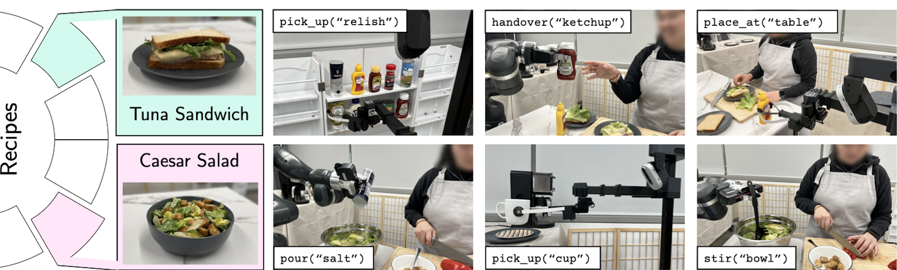

Interactive Robot Skills
We evaluate MOSAIC on multiple recipes, involving a range of robot skills that interact with the human user and everyday objects.
System Overview
Interactive Task Planning

Embedding LLMs within a behavior tree. LLMs can handle users natural language input, but its output can be error-prone and unconstrained. MOSAIC overcomes this challenges by embedding LLMs within a behavior tree. Each tree node partitions the LLM reasoning process, thereby reducing the complexity and potential error rate.
Human Motion Forecasting

Real-time Forecasting and Planning. Given an RGB-D scene image, a pose detector extracts the human's 2D pose, which is converted to 3D coordinates using the camera's depth map. The motion forecaster predicts future human motion, which is used by the robot to plan actions.
Visuomotor Skills
Interactive Demo: Ask the robot to pick an object of your choice
VLMs for perception and RL for action prediction.
At train time, we design a simulator that mimics the real environment. Given the goal position, an RL agent is trained to predict actions under a reward function that enforces environment constraints.
At inference time, taking an image and natural language as input, the visuomotor module uses OWL-ViT to output a bounding box around the object of interest. This bounding box is passed into FastSAM, which segments out the object and back-projects it onto a point cloud to produce a 3D goal pose. This 3D goal pose is used by the trained RL agent to produce the final actions.
End-to-End Evaluation
End-to-end results. We test our end-to-end system on 6 recipes, where each recipe is tested through 10 trials. Each recipe contains various subtasks involving different robot skills. We report the number of trials that are completed without any errors and the individual subtask completion rate. MOSAIC is able to complete 41/60 tasks with an average subtask completion rate of 91.6%. As each module has sub-modules, each with a clear input/output contract, localizing an error is easily automated. We use this to cluster failures into the 5 clear categories.